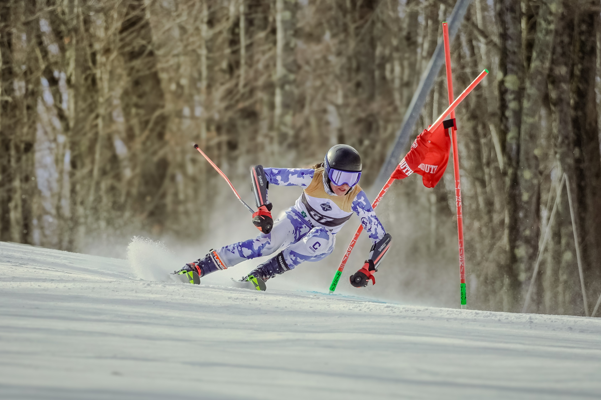
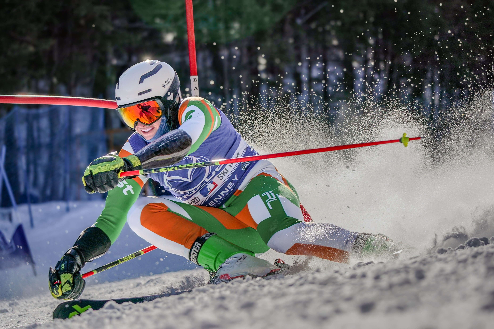
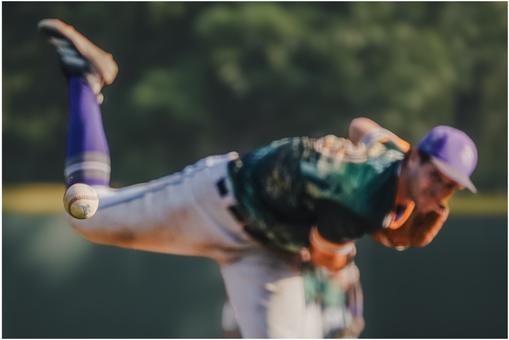
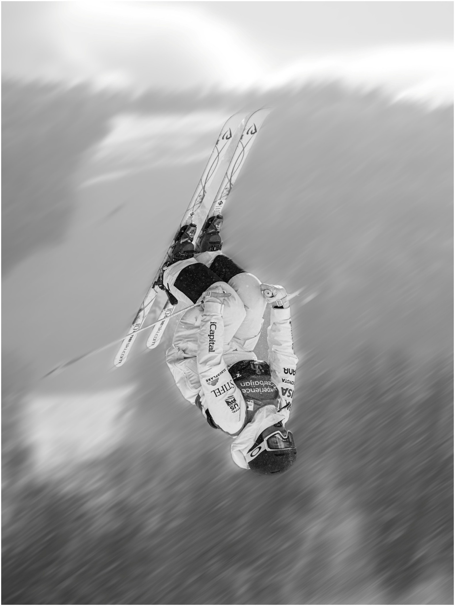
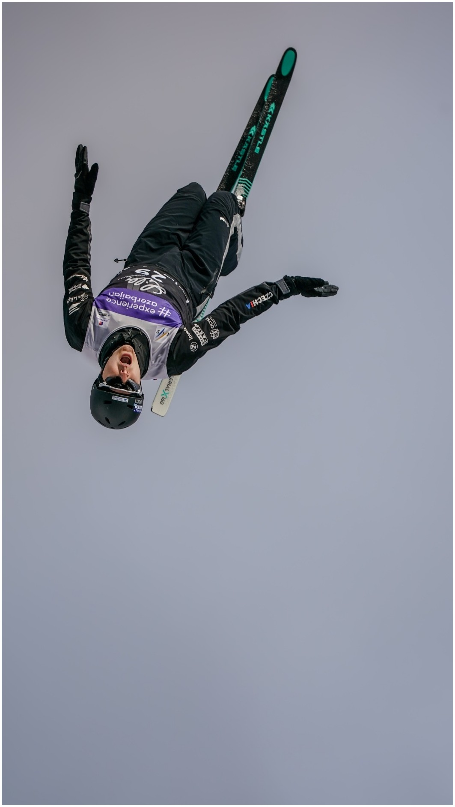
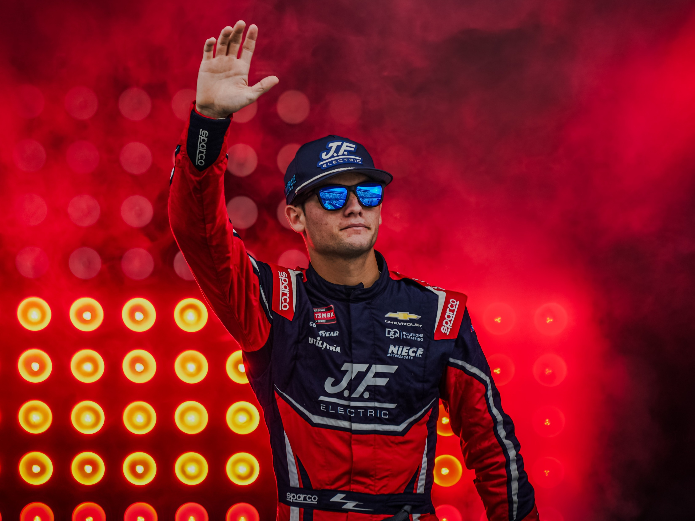
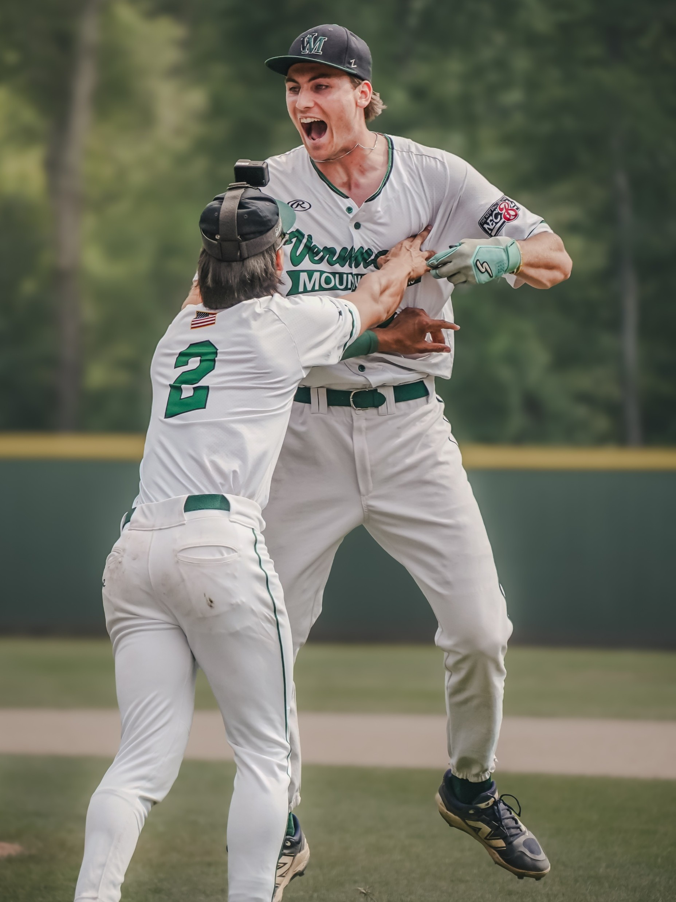
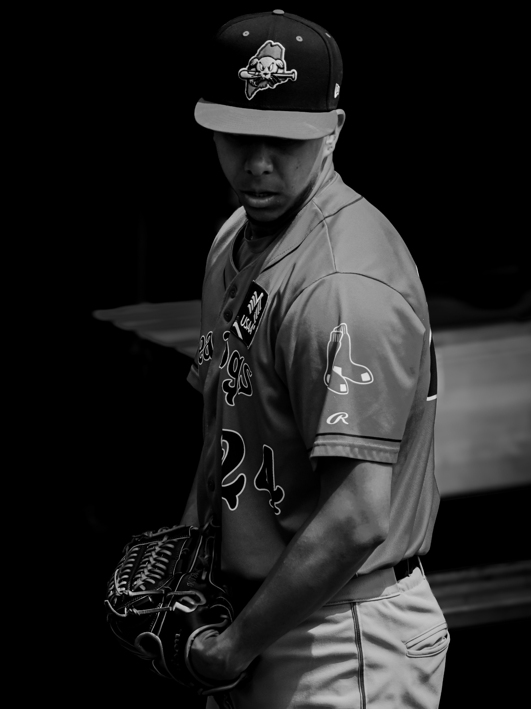

FIS Freestyle World Cup — Val St-CômeCanadian Freestyle National ChampionshipsFIS Freestyle Aerials World Cup FinalsFIS Freestyle World Cup — Waterville ValleyNCAA Skiing National ChampionshipsWorld Pro Ski TourSnowboardcross NorAm TouridOne Moguls Skis

NCAA Alpine Skiing ChampionshipsBetween the RunsBuilt for FlightWaterville Valley

World Pro Ski Tour

NECBL Pitcher

Freestyle Moguls

FIS Freestyle Aerials

NASCAR Introductions

NECBL Home Run DerbyThomas Sosa — Chesapeake Baysox

Portland Sea Dogs
Start a Project
Let’s capture the whole story.
Share the event, athlete, team, location, and intended use. I will follow up with availability, a recommended coverage plan, and a custom quote.